New Hire

Description
Use this form to process a new hire.
Author mail:
name@email.com
Process Prefix: "ITSR-"
Documentation
| New Hire
Purpose: Process a new hire (permanent, full time, part time, temp, intern...)
The roles that are significant to this process are outlined in the process business model and include the following:
Requester
Human Resources
New Hire Candidate
Information Technology
Payroll
Security
Facilities
Training
Prerequisites
Before making this workflow project live, understand and configure the following:
1. From the Properties tab in the project in the Workflow Designer, set the following details:
a. Global Email Information
i.SMTP Server – The server name or IP address of the outbound mail server
ii. Mail From Address – Email address that all system generated emails should be sent from
b. Administrative Contact
i. Administrative Contact Name – The person or group who should be made aware of any process issues
ii. Administrative Contact Info – The preferred method by which the administrator be contacted
c. Human Resources Contact Details
i. HR Fax
ii. HR Phone
d. Date Requirements
i. Offer Letter Expiration – The number of days an offer will remain valid once it is sent to a potential new hire
ii. Minimum Days Required – The minimum number of days required to complete the new hire process (prevents requests with start dates that cannot be met due to time constraints)
e.Task Email Addresses – These are the email addresses to which new hire tasks will be sent when appropriate
i. HR Email – Review requests and background findings
ii. IT Email – Set up new network accounts and workstations
iii. Facilities Manager – Grant security access to company properties
iv. Security Manager – Complete badging and security paperwork
v. Payroll Manager – Setup employees in the company payroll system
vi. Background Check Email – Carryout background checks on prospective new employees
vii. HR Manager – Handles escalated HR tasks when necessary
General Process Rules
- Proposed start dates must be at least the number of days away as established by the MinimumDaysRequired project property (this is automatically enforced)
- Human Resources will determine which pre-hire tasks are required to be completed and will have final say over the suitability of candidates based on background checks
- By default all new hire tasks have a 2 day due date from the date created (configurable). The exception is the time extended to a candidate to review and decide upon an offer. This is controlled by the OfferLetterExpiration project property
Step 1: Submit Request
The requestor will enter all of the basic information about the potential new hire and the position they would fill. At this point initial interviews have already occurred and the requester is asking to hire this specific person for the position indicated.
When clicking “Next” there will be some background checks that occur to ensure that the entered data is complete properly formatted. Errors (if any) will be brought to the users attention and they will be asked to make the necessary corrections. If the data integrity is sound, they user will be asked to review the data and submit it or make any changes they deem necessary.
Step 2: HR Review
Human Resources will be notified by email that a request has been submitted. Upon reviewing the information about the position and the candidate they will make an initial decision about whether or not to issue an offer letter.
If the request is approved, the reviewer will need to indicate which additional tasks will need to be completed. If the request is denied, the reviewer will need to offer justification of the decision.
The process would end and the requester would be notified if the initial request were denied. | | --- |
[Install Drive]:\Program Files\Symantec\Workflow\Designer\Examples\
 NewHireLib.package
NewHireLib.package
This contains the Data Type to store your Employee Information in.
If you need extra fields, add them here, then update the  Workflow.
Workflow.
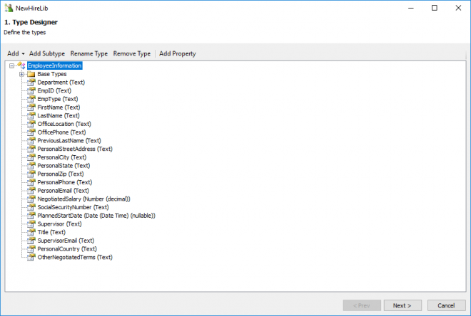
- Symantec.Workflow.New Hire.package
There are a number of models to run through here
First we shall look at the Business Model.
Business Model
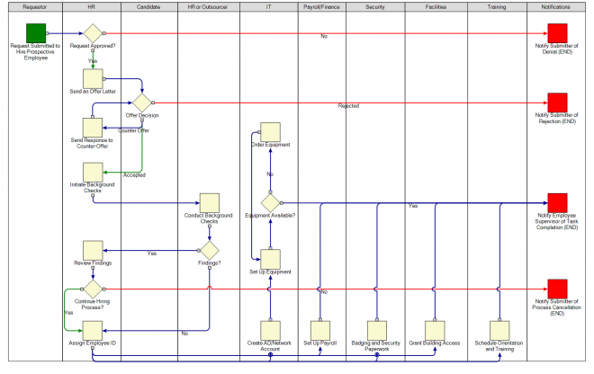
Next the actual working processes.
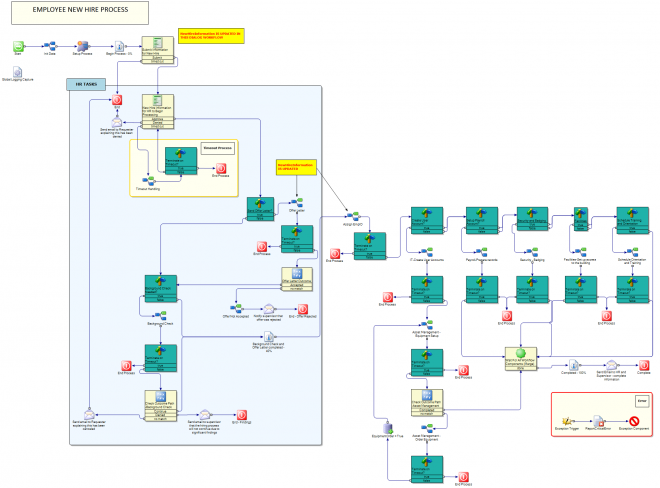
Asset Management - Load and Ready Equipment
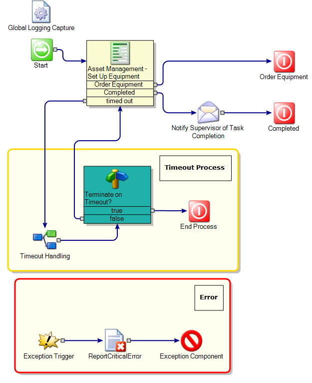
| Equipment Setup
The individual responsible for this task has only two choices for completing it.
- Indicate that the setup process is complete
- Request an order for equipment that was not available in the existing inventory
If the setup process is completed, then IT’s part of the process is finished as well and the process will simply wait for the other departments to complete their tasks. If new equipment is required we will proceed to the ordering phase of setup.
The user is required to build the order list for necessary equipment by selecting the appropriate equipment type from the dropdown box and clicking “Add to Order List”. The types of equipment available in the dropdown list is configurable. Please see the process overview document for further discussion on customizing the process. | | --- |
Asset Management - Order Equipment
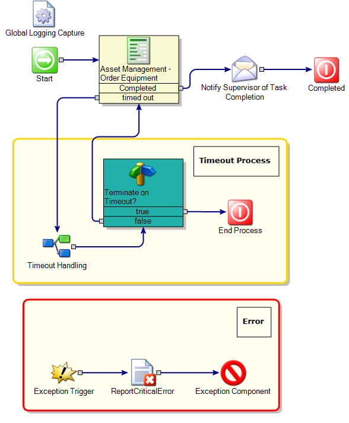
| Equipment Setup (continued)
Once the necessary equipment has been requested, the person or group responsible for acquisitions will receive the equipment request via a task and will provide the order details once the list has been processed.
The process now returns to the Equipment Setup phase and creates a new task for setting up the new equipment when it arrives. The order details and vendor contact information for the new equipment order is also made available to the IT team for follow up if necessary. |
| --- |
Assign EmpID
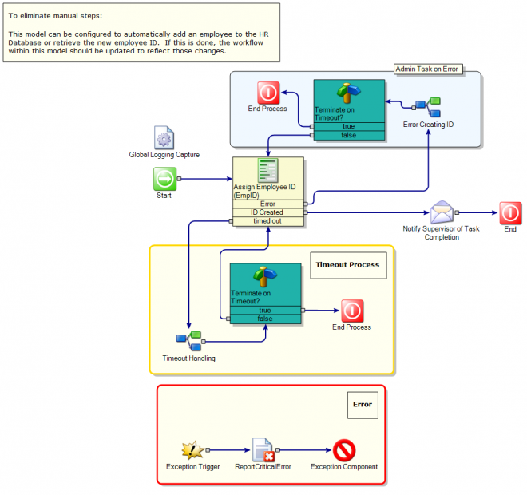
| Step 5: Create Employee ID
After passing all background checks, the process will now begin to integrate the new employee into the corporate environment. The first step of this is to create an employee ID for the new hire. By default this task falls to Human Resources, but it will likely vary from one organization to another. You can change the responsible party by editing the email address to which the task notification will be sent (customization will be further discussed at the end of this document).
Once the new employee’s ID is created it needs to be entered into the process so that it can be utilized by other departments in subsequent steps. From this point forward the supervisor for the new employee will also be notified following the completion of each task so that they may monitor the progress and stay apprised of any situations that may impact their employee on start day. |
| --- |
Background Check Types
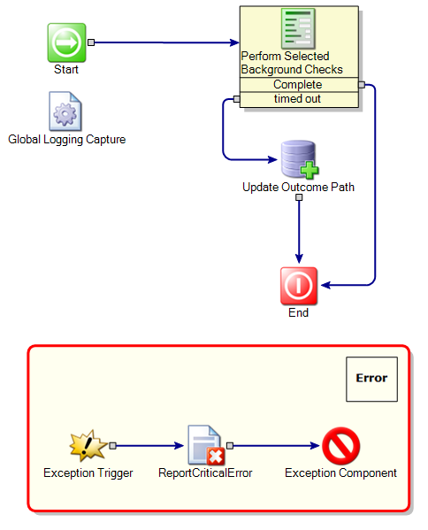
| Step 4: Background Checks (continued)
Those responsible for carrying out the background checks will summarize their findings (if any) once they have completed the task.
If there were no findings during the background check, the investigator will be required only to provide their contact details and indicate that there were no findings to report. However, if the background check did generate findings, they will also be asked to provide a summary of those findings as well as supporting documentation. |
| --- |
Background Check
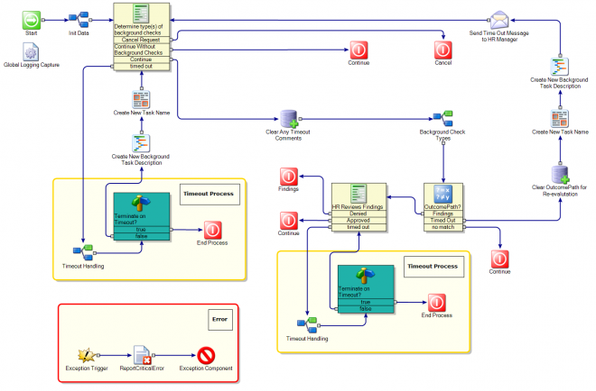
| Step 4: Background Checks
Human Resources will next determine which background checks will be required to be completed. This will be highly dependent on the nature of the position being hired for and there are several options available by default.
Once the necessary background checks have been determined, individual task will be created for any of the background check types that had elements selected: Typical Background Check, Professional Verification or Financial Check.
If all required background checks come back with no findings, then the process will automatically continue without any additional Human Resources input. However, if there were any findings then Human Resources will be required to review the details and make a decision as to whether the potential new hire is still a viable candidate for employment.
Remaining consistent with the earlier part of the process, if the reviewer denies the candidate at this point they will be required to provide justification for the decision. |
| --- |
External System Error
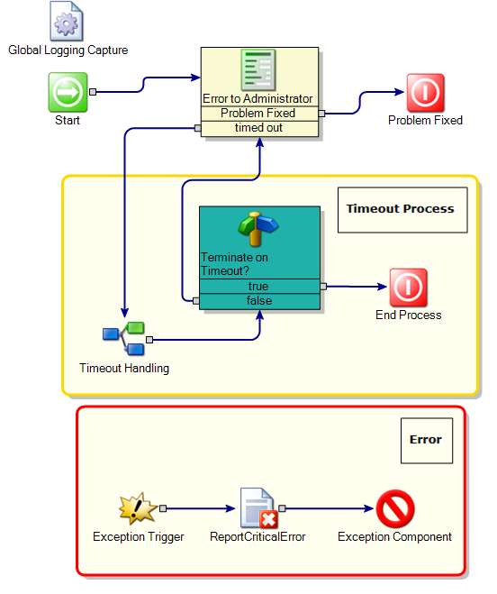
| External System Errors
In the event of a error occuring with any of the external systems that must be used to complete the new hire process (a payroll system, for example) the daprtment for whom the system errored can indicate the error and generate a task for the systems administrator. Once the admin has corrected the issue they will be able to return the original task to the department that reported the problem. |
| --- |
Facilities-Set up access
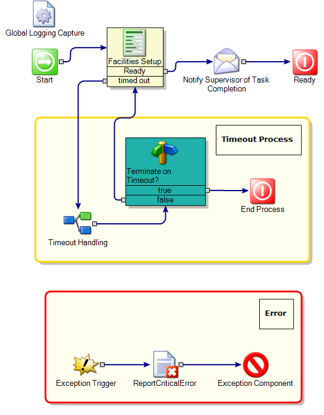
| Facilities Setup
A facilities representative must indicate when they have completed the required task and provide any additional information that may be relevant to the process. |
| --- |
IT-Create User Accounts
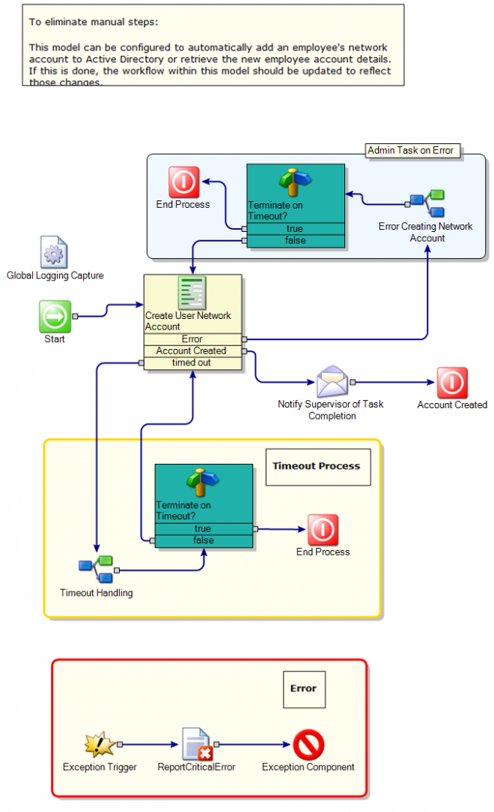
| Create User Accounts
IT setup starts with creation of the new employees network user account.
Once the new employee has the necessary user accounts their workstation (and any additional equipment required) can be set up as well. |
| --- |
Offer Letter
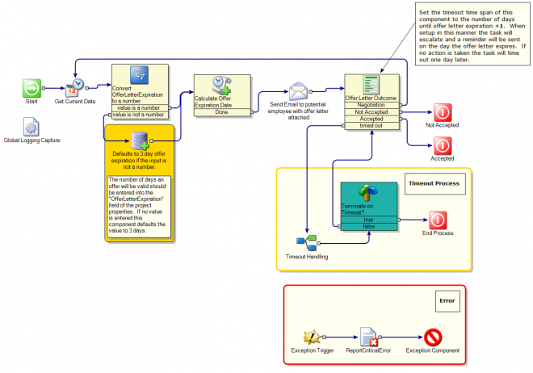
| Step 3: Offer Letter
Upon approval of the new hire request, Human Resources would put together an offer for the candidate and upload it to the new hire process. This would be sent via email to the prospect along with instructions for responding to the offer. At this point a new task is generated for Human Resources and they will have to wait and enter the candidate’s response when they receive it.
If the candidate rejects the offer and does not ask for counter-terms then the process ends and the requester is notified that the candidate has decided not to accept the offer. If the candidate accepts the offer Human Resources will then initiate background checks in Step 4. |
| --- |
Offer Not Accepted
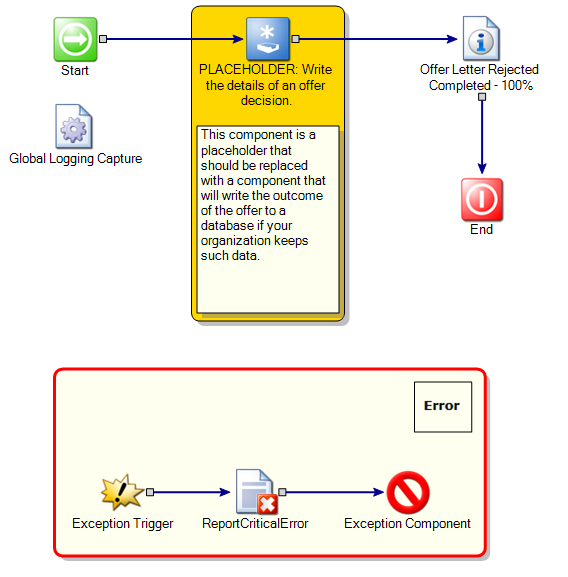
| Step 3: Offer Letter (continued)
If the candidate offer counter-terms Human Resources will determine if the new terms are acceptable and if so, generate a new offer letter.
Once the new offer letter is completed and uploaded, the process will return to the beginning of Step 3 and Human Resources will once again await the candidate’s response to the new offer letter. |
| --- |
Orientation and Training
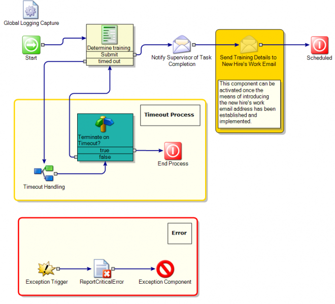
| Orientation and Training
In addition to the regular orientation session, the new employee may require some additional training. Such training can be scheduled from this form. By default the optional training is limited to Benefits, Ethics and Equipment training, but this can be customized to meet the additional needs of an organization. Please see the process overview document for further discussion on customizing the process. |
| --- |
Payroll
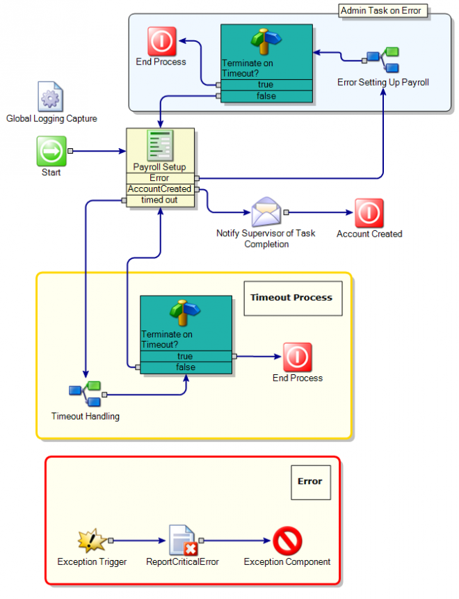
| Payroll Setup
A payroll representative must indicate when they have completed the required task and provide any additional information that may be relevant to the process. |
| --- |
Security - Badging
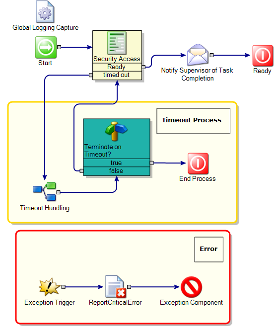
| Badging and Security Paperwork
A security representative must indicate when they have completed the required task and provide any additional information that may be relevant to the process. |
| --- |
Timeout Handling
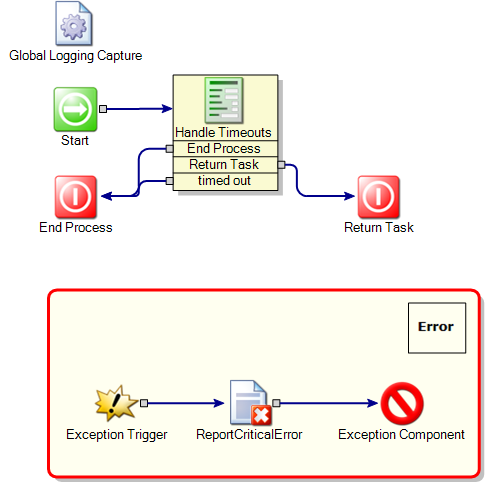
| Handling Timeouts
In the event of a timeout during any step of the process, a task will be created for a process manager (the Human Resources manager by default) to determine how best to proceed with the process. The options are to return the timed out task to the original assignee or to end the termination process. This event will be initiated if any step in the process is not completed within the allotted time. By default most task will timeout after 2 days, but this can be configured by adjusting the timeout time span of the dialog workflow component for any task. |
| --- |
Properties
| Name | Category | Value | Description |
|---|---|---|---|
| HREmail | Task Emails | HR@demo.local | Email details of the person/group who will review new hire requests and background check findings |
| ITEmail | Task Emails | IT@demo.local | Email details of the person/group who will create network accounts and setup workstations |
| CompanyName | Symantec | ||
| FacilitiesManager | Task Emails | Facilities@demo.local | Email details of the person/group responsible for granting security access to company property |
| SecurityManager | Task Emails | Security@demo.local | Email details for the person/group who is responsible for granting security badges and completing security paperwork |
| HRManager | Task Emails | HRManager@demo.local | Email details of the person/group who will be the escalation point for HR tasks when necessary |
| HRFax | HR Contact Information | 123-456-7890 | |
| AdministratorContactName | Admin Contact Information | Administrator | Point of contact for process errors to be reported |
| AdministratorContactInfo | Admin Contact Information | 123-456-7890 | Contact details for administrator point of contact |
| SMTPServer | Global Email Settings | localhost | |
| MailFromAddress | Global Email Settings | no-reply@demo.local | |
| PayrollManager | Task Emails | Payroll@demo.local | Email details for the person/group who will setup employees in the payroll system |
| OfferLetterExpiration | Date Requirements | 3 | Set this field to the number of days that an offer letter will be valid after is has been sent. |
| MinimumDaysRequired | Date Requirements | 5 | Set thiis field to the minimum number of days required to complete the hiring process (minimum 1 day) |
| HRPhone | HR Contact Information | 123-456-7890 | |
| BackgroundCheckEmail | Task Emails | Background@demo.local | Email details of the person/group who will carryout required background checks |
| AdministratorEmail | Admin Contact Information | admin@demo.local | Email address for administrator point of contact |
Global Data
| Name | Value |
|---|---|
| DocumentCategoryID |
Documented on Connect by: